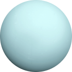

Уран
Уран — седьмая по удаленности от Солнца планета
Солнечной системы. Имея в радиусе порядка 25000 км,
является третьей по величине планетой после Юпитера
и Сатурна. Как и они, относится к газовым гигантам,
однако, в отличие от них, не имеет в своем составе
металлического водорода. Уран также имеет много
водяного льда в его высокотемпературных
модификациях, поэтому ему присвоена категория
«ледяных гигантов» как подкатегория газовых. Окружен
27 спутниками, крупнейшие из которых — Титания,
Оберон, Ариэль и Умбриэль. Также имеет рекордное
количество слабо выраженных колец — 13. Период
полного обращения Урана вокруг Солнца составляет 84
земных года. Сутки короткие: полный оборот вокруг
своей оси Уран завершает за 17 часов 14 минут
24 секунды. Направление вращения — обратное,
то есть противоположное вращению вокруг Солнца.